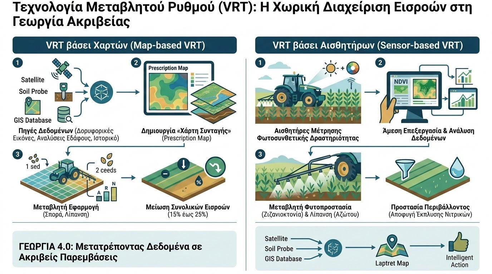

Στη συμβατική γεωργία, η διαχείριση των αγροτεμαχίων βασιζόταν στη θεώρησή τους ως ομοιογενών ενoτήτων, εφαρμόζοντας σταθερές δόσεις σπόρων, λιπασμάτων και φυτοπροστατευτικών προϊόντων σε ολόκληρη την έκταση. Ωστόσο, η εδαφική ετερογένεια, οι διακυμάνσεις στην τοπογραφία και η χωρική παραλλακτικότητα της γονιμότητας έχουν ως αποτέλεσμα ορισμένες ζώνες να υπολίπονται σε απόδοση ενώ άλλες να υπερλιπαίνονται. Η απάντηση της σύγχρονης τεχνολογίας σε αυτό το πρόβλημα είναι η Τεχνολογία Μεταβλητού Ρυθμού (Variable Rate Technology - VRT).
Η τεχνολογία VRT επιτρέπει τη μεταβολή της ποσότητας των εισροών σε πραγματικό χρόνο καθώς το τρακτέρ διασχίζει τον αγρό. Διακρίνεται σε δύο βασικές προσεγγίσεις: τη VRT βάσει Χαρτών (Map-based VRT) και τη VRT βάσει Αισθητήρων (Sensor-based VRT). Στην πρώτη περίπτωση, συνδυάζονται πολυφασματικές δορυφορικές εικόνες, ιστορικοί χάρτες αποδόσεων και χωρικά δεδομένα εδαφολογικών αναλύσεων μέσω Γεωγραφικών Συστημάτων Πληροφοριών (GIS) για τη δημιουργία ψηφιακών «χαρτών συνταγής» (prescription maps). Στη δεύτερη περίπτωση, οπτικοί αισθητήρες προσαρμοσμένοι στα μηχανήματα μετρούν τη φωτοσυνθετική δραστηριότητα της καλλιέργειας και ρυθμίζουν ακαριαία τις δόσεις.

Η εφαρμογή της VRT στη σύγχρονη γεωπονική πράξη εκτείνεται σε τρεις κύριους πυλώνες: στη Μεταβλητή Σπορά (Variable Rate Seeding) ανάλογα με τη διαθέσιμη υγρασία και τη δομή του εδάφους, στη Μεταβλητή Λίπανση (Variable Rate Fertilization) με βάση τα επίπεδα οργανικής ουσίας και τους δείκτες NDVI, καθώς και στη Μεταβλητή Φυτοπροστασία (Variable Rate Application) για την εστιασμένη αντιμετώπιση ζιζανίων και ασθενειών.
Τα επιστημονικά τεκμηριωμένα οφέλη από την υιοθέτηση της τεχνολογίας VRT περιλαμβάνουν:
- Βελτιστοποίηση Χρήσης Εισροών: Η εφαρμογή λιπασμάτων αποκλειστικά στα σημεία όπου υπάρχει πραγματική ανάγκη μειώνει τη συνολική κατανάλωση κατά 15% έως 25%, αποτρέποντας τη σπατάλη πόρων.
- Προστασία του Περιβάλλοντος: Η αποφυγή υπερβολικών εφαρμογών αζώτου και φωσφόρου σε ζώνες χαμηλής δυναμικής μειώνει δραστικά τον κίνδυνο έκπλυσης νιτρικών και ευτροφισμού των επιφανειακών υδάτων.
- Μέγιστη Οικονομική Αποδοτικότητα: Η εξισορρόπηση της ανάπτυξης των φυτών σε όλη την έκταση του αγρού οδηγεί σε ομοιόμορφη ωρίμανση και αύξηση της συνολικής στρεμματικής απόδοσης.
Η Τεχνολογία Μεταβλητού Ρυθμού αποτελεί τον ακρογωνιαίο λίθο της Γεωργίας 4.0. Μετατρέποντας τα χωρικά δεδομένα σε ακριβείς αυτόματες παρεμβάσεις στο πεδίο, ο σύγχρονος γεωπόνος εξασφαλίζει τη βιωσιμότητα της παραγωγής, συνδυάζοντας την περιβαλλοντική προστασία με την αύξηση της κερδοφορίας.